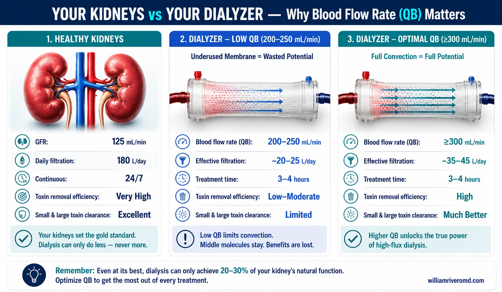
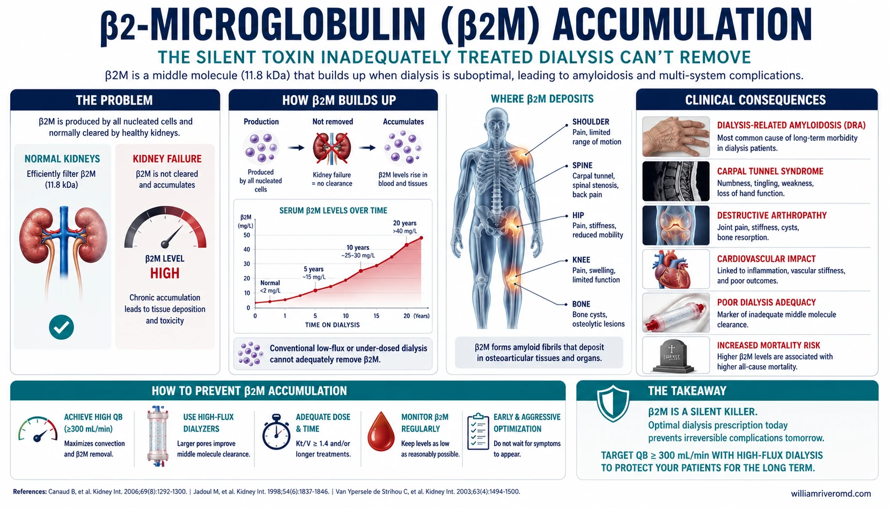
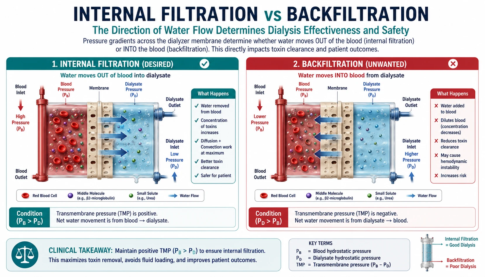
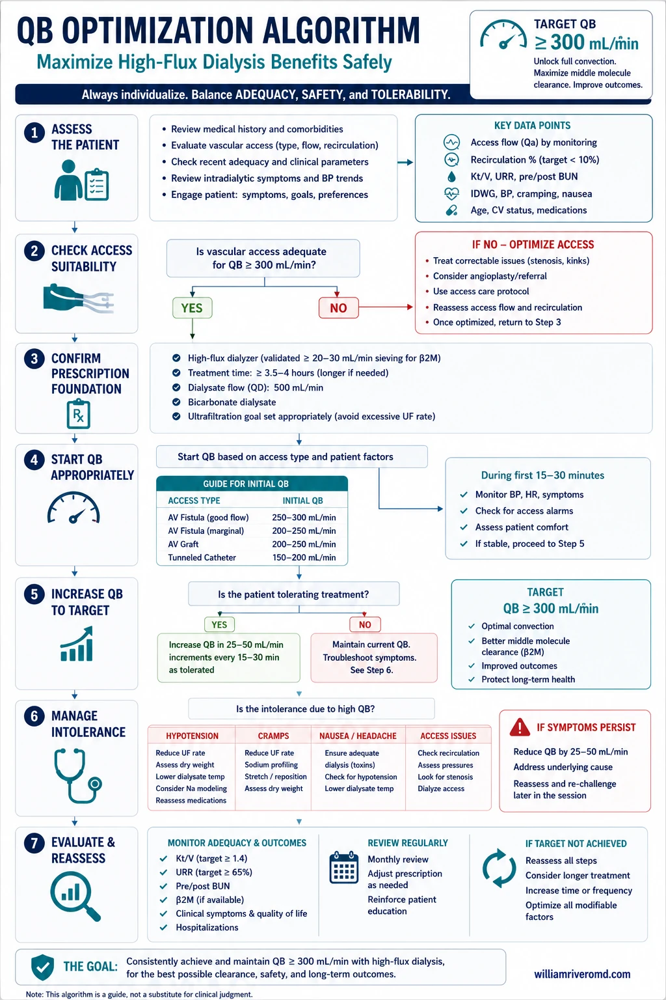
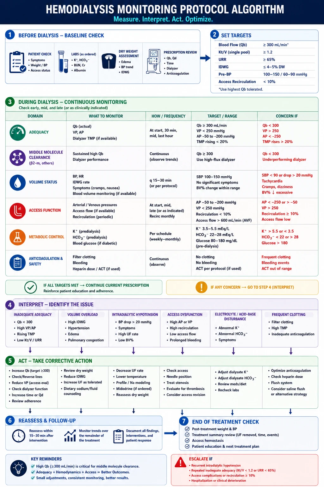

What Is a High-Flux Dialyzer?Ano ang High-Flux Dialyzer?Unsa ang High-Flux Dialyzer?Ano ing High-Flux Dialyzer?
A dialyzer is the artificial kidney used in hemodialysis — the hollow-fiber filter through which your blood is cleaned. Not all dialyzers are the same. High-flux dialyzers have larger pores and were designed to remove not just small toxins like urea, but also larger “middle molecules” that accumulate over years of dialysis and silently damage your heart, joints, and nerves. The problem: they only work as intended when blood is pumped fast enough.Ang dialyzer ay ang artipisyal na bato na ginagamit sa hemodialysis — ang hollow-fiber filter kung saan nilililinis ang iyong dugo. Hindi lahat ng dialyzer ay pareho. Ang mga high-flux dialyzer ay may mas malalaking butas at idiniyo upang alisin hindi lamang ang maliliit na toxin tulad ng urea, kundi pati na rin ang mga mas malalaking “middle molecules” na nag-iipon sa loob ng maraming taon ng dialysis at tahimik na nagpapasama sa iyong puso, kasukasuan, at nerbiyos.Ang dialyzer mao ang artipisyal nga kidney nga gigamit sa hemodialysis — ang hollow-fiber filter diin gilimpyohan ang imong dugo. Dili tanan nga dialyzer managsama. Ang mga high-flux dialyzer adunay mas dako nga mga lungag ug gidisenyo aron matangtang dili lamang ang gagmay nga mga toxin sama sa urea, kondili usab ang mas dako nga “middle molecules” nga nag-ipon sulod sa daghang tuig sa dialysis ug hilum nga nakapasamot sa imong kasingkasing, mga lutod, ug nerbiyos.Ing dialyzer ya ing artipisyal a batu a ginagamit king hemodialysis — ing hollow-fiber filter kung ninu nilililinis ing iyung daya. Ali amin deng dialyzer ya pareho. Ing deng high-flux dialyzer ya maragul a butas at idiniyo agud alisin ali lamang ing maliliit a toxin tulad ning urea, kundi pati na rin ing mas mararakal a “middle molecules” a nag-iipon king loob ning darakal a taon ning dialysis at tahimik a nagpapasama king iyung puso, kasukasuan, at nerbiyos.
Low-Flux DialyzerLow-Flux DialyzerLow-Flux DialyzerLow-Flux Dialyzer
Pore size ~8 nm. Removes small molecules only: urea (60 Da), creatinine (113 Da), potassium. Adequate for basic dialysis adequacy (Kt/V). Does NOT remove beta-2 microglobulin or larger middle molecules. Cheaper. Safe even with standard (non-ultrapure) water quality.Laki ng butas ~8 nm. Nag-aalis lamang ng maliliit na molekula: urea, creatinine, potassium. Sapat para sa pangunahing dialysis adequacy (Kt/V). HINDI nag-aalis ng beta-2 microglobulin o mas malalaking middle molecules. Mas mura. Ligtas kahit sa karaniwang kalidad ng tubig.Gidak-on sa lungag ~8 nm. Nagtangtang lamang sa gagmay nga mga molekula: urea, creatinine, potassium. Angay alang sa sukaranan nga dialysis adequacy (Kt/V). DILI nagtangtang sa beta-2 microglobulin o mas dako nga mga middle molecule. Mas barato. Luwas bisan sa ordinaryo nga kalidad sa tubig.Laki ning butas ~8 nm. Nag-aalis lamang ning maliliit a molekula: urea, creatinine, potassium. Sapat para king pangunahing dialysis adequacy (Kt/V). HINDI nag-aalis ning beta-2 microglobulin o mas mararakal a middle molecules. Mas mura. Ligtas kahit king karaniwang kalidad ning danum.
High-Flux DialyzerHigh-Flux DialyzerHigh-Flux DialyzerHigh-Flux Dialyzer
Pore size ~10–15 nm. Designed to remove middle molecules (500–50,000 Da): beta-2 microglobulin, inflammatory proteins, FGF-23 fragments, PTH. Costs 2–3× more than low-flux. Requires QB ≥300 mL/min to perform as designed. Requires ultrapure dialysate water to be safe. At QB 200–250, it performs like a low-flux at increased cost and risk.Laki ng butas ~10–15 nm. Idiniyo upang alisin ang mga middle molecules: beta-2 microglobulin, mga inflammatory protein, FGF-23, PTH. Nagkakahalaga ng 2–3× higit kaysa sa low-flux. Nangangailangan ng QB ≥300 mL/min upang gumana nang wastô. Nangangailangan ng ultrapure na tubig. Sa QB 200–250, gumagana ito tulad ng isang low-flux ngunit mas mahal at may mas mataas na panganib.Gidak-on sa lungag ~10–15 nm. Gidisenyo aron tangtangon ang mga middle molecule: beta-2 microglobulin, mga inflammatory protein, FGF-23, PTH. Nagkantidad 2–3× kaysa low-flux. Nanginahanglan og QB ≥300 mL/min aron molihok ingon sa gidisenyo. Nanginahanglan og ultrapure nga tubig aron luwas. Sa QB 200–250, molihok kini sama sa low-flux apan mas mahal ug mas delikado.Laki ning butas ~10–15 nm. Idiniyo agud alisin ing deng middle molecules: beta-2 microglobulin, inflammatory proteins, FGF-23, PTH. Nagkakahalaga ning 2–3× kaysa low-flux. Kailangan ning QB ≥300 mL/min agud gumana nang tama. Kailangan ning ultrapure a danum. King QB 200–250, gumagana iti tulad ning low-flux ngarud mas mahal at mas delikado.
The Cost-Effectiveness ProblemAng Suliranin sa HalagaAng Problema sa KantidadIng Suliranin king Halaga
High-flux dialyzers cost PhP 400–800 more per session than low-flux. If your blood flow rate is below 300 mL/min, you are paying for a premium membrane but receiving standard results. Under PhilHealth coverage, this represents a systemic waste of dialysis resources — and more importantly, a failure to protect your long-term health.Ang mga high-flux dialyzer ay nagkakahalaga ng PhP 400–800 higit bawat sesyon kaysa sa low-flux. Kung ang iyong blood flow rate ay wala pang 300 mL/min, nagbabayad ka para sa isang premium na membrane ngunit tumatanggap ng karaniwang resulta. Sa ilalim ng PhilHealth coverage, ito ay kumakatawan sa sistematikong pag-aaksaya ng mga mapagkukunan ng dialysis.Ang mga high-flux dialyzer nagkantidad og PhP 400–800 pa matag sesyon kaysa low-flux. Kung ang imong blood flow rate ubos sa 300 mL/min, nagbayad ka alang sa premium nga membrane apan nakadawat og ordinaryo nga mga resulta. Ubos sa PhilHealth coverage, kini nagrepresenta sa sistematiko nga pagpanapastilan sa mga kapanguhaan sa dialysis.Ing deng high-flux dialyzer ya nagkakahalaga ning PhP 400–800 pa bawat sesyon kaysa sa low-flux. Nung ing iyung blood flow rate wala pang 300 mL/min, nagbabayad ka para king premium a membrane ngarud tumatanggap ning karaniwang resulta. King ilalim ning PhilHealth coverage, iti ya kumakatawan king sistematikong pag-aaksaya ning deng rekurso ning dialysis.
Your Natural Kidney vs Your Dialyzer: The Filtration GapAng Iyong Natural na Bato vs ang Iyong Dialyzer: Ang Agwat sa FiltrasyonAng Imong Natural nga Kidney vs ang Imong Dialyzer: Ang Kakulangang PagtuhoyIng Iyung Natural a Batu vs ing Iyung Dialyzer: Ing Agwat king Pagtuhoy

Understanding why dialysis is always a partial replacement — not a full one — helps you appreciate why every optimization matters. Healthy kidneys filter continuously and remove toxins across a vastly wider molecular weight range than any dialyzer. The goal of high-flux dialysis is to close that gap as much as possible — but only if the machine is set up correctly.Ang pag-unawa kung bakit ang dialysis ay palaging bahagyang kapalit lamang — hindi buo — ay tumutulong sa iyong mapahalagahan kung bakit mahalaga ang bawat pagpapabuti. Ang malulusog na mga bato ay nagfi-filter nang tuluy-tuloy at nag-aalis ng mga toxin sa mas malawak na hanay ng molekular na timbang. Ang layunin ng high-flux dialysis ay pangalagaan ang agwat na iyon hangga't maaari — ngunit tanging kung ang makina ay naka-set up nang tama.Ang pagsabut ngano ang dialysis kanunay usa ka partial nga kapuli lamang — dili buo — nagtabang kanimo nga maamgohan ngano nga importante ang matag pagpaayo. Ang himsog nga mga kidney nagfilter sa padayon ug nagtangtang sa mga toxin sa mas lapad nga hanay sa molecular weight. Ang tumong sa high-flux dialysis mao ang pagsirado nianang gapped hangtud sa mahimo — apan kung ang makina gi-setup sa husto lamang.Ing pag-unawa kung bakit ing dialysis ya palaging bahagyang kapalit lamang — ali buo — ya tumutulong king iyung mapahalagahan kung bakit mahalaga ing bawat pagpapabuti. Ing malulusog a deng batu ya nagfi-filter nang tuluy-tuloy at nag-aalis ning deng toxin king mas malawak a hanay ning molecular weight. Ing layunin ning high-flux dialysis ya ang pangalagaan ing agwat a iyun hanggang maaari — ngarud tanging nung ing makina ya naka-set up nang tama.
| FunctionTungkulinGimbuhatonGampanan | Healthy KidneysMalulusog na BatoHimsog nga KidneyMalusog a Deng Batu | Low-Flux HDLow-Flux HDLow-Flux HDLow-Flux HD | High-Flux HD (QB ≥300)High-Flux HD (QB ≥300)High-Flux HD (QB ≥300)High-Flux HD (QB ≥300) | High-Flux HD (QB 200–250)High-Flux HD (QB 200–250)High-Flux HD (QB 200–250)High-Flux HD (QB 200–250) |
|---|---|---|---|---|
| Filtration rateBilis ng pagtuhoyGrado sa pagtuhoyBilis ning pagtuhoy | ~125 mL/min GFR — 180 L/day continuously | ~200–250 mL/min QB — 9–12 h/week only | ~300–400 mL/min QB — 9–12 h/week only | ~200–250 mL/min QB — 9–12 h/week only |
| Small molecules (urea, creatinine)Maliliit na molekulaGagmay nga molekulaMaliliit a molekula | Excellent — 100% daily | Adequate — Kt/V ≥1.4 | Excellent — Kt/V ≥1.4–1.8 | Borderline — Kt/V ≥1.4 possible |
| Middle molecules (beta-2M, MW 11,800 Da)Mga middle moleculesMga middle moleculeDeng middle molecules | Excellent — freely filtered & catabolized | Poor — nearly zero removal | Good — β2M reduction ratio ~60–70% | Poor — β2M reduction ratio ~30–40% only |
| Large middle molecules (FGF-23, cytokines)Malalaking middle moleculesDako nga middle moleculeMararakal a middle molecules | Excellent — filtered & metabolized | None | Partial — convection-dependent | Minimal |
| Hours of filtration per weekMga oras ng pagtuhoy bawat linggoMga oras sa pagtuhoy matag semanaDeng oras ning pagtuhoy bawat lutu | 168 h/week | 9–12 h/week | 9–12 h/week | 9–12 h/week |
| Hormonal & metabolic functionsMga hormonal na gawainMga hormonal nga gimbuhatonDeng hormonal a gampanan | Intact — EPO, Vit D, acid-base | None replaced | None replaced | None replaced |
| Back-filtration / endotoxin riskPanganib ng back-filtrationPeligro sa back-filtrationPeligro ning back-filtration | None | Low — membrane blocks endotoxins | Moderate — requires ultrapure water | High risk / low benefit |
The Uncomfortable TruthAng KatotohananAng KamatuoranIng Katotohanan
Healthy kidneys filter 180 liters of blood every single day. Hemodialysis three times a week processes approximately 60–80 liters per session — for 9–12 total hours per week vs 168 hours for healthy kidneys. This means dialysis replaces only about 5–7% of normal kidney function by time alone. Optimizing how those 9–12 hours work — including correct QB — is therefore not optional. Every setting matters.Ang malulusog na mga bato ay nagfi-filter ng 180 litro ng dugo bawat araw. Ang hemodialysis tatlong beses sa isang linggo ay nagpoproseso ng humigit-kumulang 60–80 litro bawat sesyon — para sa kabuuang 9–12 oras bawat linggo kumpara sa 168 oras para sa malulusog na mga bato. Ibig sabihin nito, ang dialysis ay pumapalit lamang sa humigit-kumulang 5–7% ng normal na tungkulin ng bato ayon sa oras. Ang pag-optimize ng kung paano gumagana ang 9–12 oras na iyon — kasama ang tamang QB — ay hindi opsyonal.Ang himsog nga mga kidney nagfilter og 180 litro sa dugo matag adlaw. Ang hemodialysis tulo ka beses matag semana nagproseso og mga 60–80 litro matag sesyon — alang sa kabuuan 9–12 ka oras matag semana kumpara sa 168 oras alang sa himsog nga mga kidney. Nagpasabot kini nga ang dialysis nagpuli lamang og mga 5–7% sa normal nga gimbuhaton sa kidney pinaagi sa oras lamang. Ang pag-optimize sa kung giunsa molihok ang 9–12 ka oras — apil ang husto nga QB — busa dili opsyonal.Ing malulusog a deng batu ya nagfi-filter ning 180 litro ning daya bawat aldo. Ing hemodialysis tatlong beses king metung a lutu ya nagpoproseso ning mga 60–80 litro bawat sesyon — para king kabuuan 9–12 oras bawat lutu kumpara king 168 oras para king malulusog a deng batu. Ibig sabihin niti, ing dialysis ya pumapalit lamang king mga 5–7% ning normal a gampanan ning batu ayon king oras. Ing pag-optimize ning kung paano gumagana ing 9–12 oras a iyun — kasama ing tamang QB — ya ali opsyonal.
Why Blood Flow Rate (QB) Defines Your ResultsBakit Tinutukoy ng QB ang Iyong mga ResultaNgano ang QB Naghulag sa Imong mga ResultaBakit ing QB Tinutukoy ing Iyung deng Resulta
Think of a high-flux dialyzer like a high-performance engine. Running it at low RPM will never let it reach its potential. Your high-flux membrane works the same way: it needs blood flowing fast enough to generate the pressure required to push middle molecules through its larger pores. Without that pressure, those pores are wasted.Isipin ang high-flux dialyzer bilang isang de-kalidad na makina. Ang pagpapatakbo nito sa mababang RPM ay hindi kailanman magbibigay-daan sa kanya na maabot ang kanyang potensyal. Ang iyong high-flux membrane ay gumagana sa parehong paraan: kailangan ng dugo na dumadaloy nang sapat na bilis upang makabuo ng presyur na kinakailangan upang itulak ang mga middle molecules sa pamamagitan ng mga mas malalaking butas nito.Hunahunaa ang high-flux dialyzer isip usa ka hataas nga performance engine. Ang pagpadagan niini sa ubos nga RPM dili gyud motugot niini nga maabot ang iyang potensyal. Ang imong high-flux membrane molihok sa samang paagi: nanginahanglan og dugo nga nagdagayday sa igo nga bilis aron makamugna sa presyur nga gikinahanglan aron itulod ang mga middle molecule pinaagi sa mas dako nga mga lungag niini.Isipin ing high-flux dialyzer bilang isang de-kalidad a makina. Ing pagpapatakbo niti king mababang RPM ali kailanman magbibigay-daan kaya na maabot ing kaniyang potensyal. Ing iyung high-flux membrane ya gumagana king parehong paraan: kailangan ning daya a dumadaloy nang sapat a bilis agud makabuo ning presyur a kailangan agud itulak ing deng middle molecules sa pamamagitan ning mas mararakal a butas niti.
Blood enters the dialyzer at QB mL/minAng dugo ay pumapasok sa dialyzer sa QB mL/minAng dugo mosulod sa dialyzer sa QB mL/minIng daya ya pumasuk king dialyzer king QB mL/min
The pump speed (QB) determines how much blood passes through the hollow fibers per minute. Higher QB = more blood processed = more toxins available for removal.Ang bilis ng pump (QB) ay nagtatakda kung gaano karaming dugo ang dumadaan sa hollow fibers bawat minuto. Mas mataas na QB = mas maraming dugo na naproseso = mas maraming toxin na maaaring alisin.Ang bilis sa pump (QB) nagxino kung pila ang dugo ang moagi sa hollow fiber matag minuto. Mas taas nga QB = mas daghang dugo nga naproseso = mas daghang toxin nga mahimong tangtangon.Ing bilis ning pump (QB) ya nagtatakda kung gaano karaming daya ing dumadaan king hollow fibers bawat minuto. Mas mataas a QB = mas darakal a daya a naproseso = mas darakal a toxin a maaaring alisin.
Diffusion removes small molecules — adequate even at QB 200Ang diffusion ay nag-aalis ng maliliit na molekula — sapat kahit sa QB 200Ang diffusion nagtangtang sa gagmay nga mga molekula — angay bisan sa QB 200Ing diffusion ya nag-aalis ning maliliit a molekula — sapat kahit king QB 200
Small molecules like urea and creatinine move across the membrane by concentration gradient (diffusion). This works reasonably well even at QB 200. This is why your Kt/V can be “normal” even when your dialyzer is underperforming on middle molecules.Ang maliliit na molekula tulad ng urea at creatinine ay tumatawid sa membrane sa pamamagitan ng concentration gradient (diffusion). Ito ay gumagana nang maayos kahit sa QB 200. Ito ang dahilan kung bakit ang iyong Kt/V ay maaaring maging “normal” kahit ang iyong dialyzer ay hindi gumaganap nang mabuti sa middle molecules.Ang gagmay nga mga molekula sama sa urea ug creatinine molupad sa membrane pinaagi sa concentration gradient (diffusion). Kini molihok sa igo nga maayo bisan sa QB 200. Mao kini ang hinungdan ngano ang imong Kt/V mahimong “normal” bisan kung ang imong dialyzer dili maayo ang performance sa mga middle molecule.Ing maliliit a molekula tulad ning urea at creatinine ya tumatawid king membrane sa pamamagitan ning concentration gradient (diffusion). Iti ya gumagana nang maayos kahit king QB 200. Iti ing dahilan kung bakit ing iyung Kt/V ya maaaring maging “normal” kahit ing iyung dialyzer ya ali gumaganap nang magaling king middle molecules.
Convection removes middle molecules — requires higher QBAng convection ay nag-aalis ng middle molecules — nangangailangan ng mas mataas na QBAng convection nagtangtang sa mga middle molecule — nanginahanglan og mas taas nga QBIng convection ya nag-aalis ning middle molecules — kailangan ning mas mataas a QB
Middle molecules are too large to move by diffusion alone. They are cleared by convection — being dragged through the membrane pores with ultrafiltrate (water). Convection requires transmembrane pressure (TMP), which depends on QB. At QB 200, TMP is low — middle molecules are barely cleared.Ang mga middle molecules ay masyadong malaki upang makilos sa pamamagitan ng diffusion lamang. Sila ay nililinis sa pamamagitan ng convection — ang paghila sa kanila sa pamamagitan ng mga butas ng membrane kasama ang ultrafiltrate (tubig). Ang convection ay nangangailangan ng transmembrane pressure (TMP), na nakasalalay sa QB. Sa QB 200, ang TMP ay mababa — ang mga middle molecules ay halos hindi nililinis.Ang mga middle molecule dako kaayo aron mabalhin pinaagi sa diffusion lamang. Gilimpyohan sila pinaagi sa convection — pagbitad kanila pinaagi sa mga lungag sa membrane uban sa ultrafiltrate (tubig). Ang convection nanginahanglan og transmembrane pressure (TMP), nga nagdepende sa QB. Sa QB 200, ang TMP ubos — ang mga middle molecule halos dili malimpyohan.Ing deng middle molecules ya masyadong maragul agud makilos sa pamamagitan ning diffusion lamang. Sila ya nililinis sa pamamagitan ning convection — ing paghila kaya sa pamamagitan ning deng butas ning membrane kasama ing ultrafiltrate (danum). Ing convection ya kailangan ning transmembrane pressure (TMP), a nakasalalay king QB. King QB 200, ing TMP ya mababa — ing deng middle molecules ya halos ali nililinis.
At QB ≥300: internal filtration activates the high-flux poresSa QB ≥300: ang internal filtration ay nagpapagana ng high-flux poresSa QB ≥300: ang internal filtration nagaktibo sa high-flux poresKing QB ≥300: ing internal filtration ya nagpapagana ning high-flux pores
At QB 300–400 mL/min, TMP increases significantly. Blood-side pressure exceeds dialysate-side pressure in the proximal fiber — ultrafiltrate (with middle molecules) is pushed through the pores. In the distal fiber, pressure reverses and fluid returns (back-filtration). This internal convection loop is what makes high-flux dialysis effective — but only at adequate QB.Sa QB 300–400 mL/min, ang TMP ay tumataas nang malaki. Ang presyur sa gilid ng dugo ay lumagpas sa presyur sa gilid ng dialysate sa proximal fiber — ang ultrafiltrate (kasama ang mga middle molecules) ay itinutulak sa pamamagitan ng mga butas. Sa distal fiber, ang presyur ay bumabaligtad at ang likido ay bumabalik (back-filtration). Ang internal convection loop na ito ang nagpapaepektibo sa high-flux dialysis — ngunit tanging sa sapat na QB lamang.Sa QB 300–400 mL/min, ang TMP motubo pag-ayo. Ang presyur sa kilid sa dugo molapaw sa presyur sa kilid sa dialysate sa proximal fiber — ang ultrafiltrate (uban sa mga middle molecule) gipaduso pinaagi sa mga lungag. Sa distal fiber, ang presyur mobaligtad ug ang likido mobalik (back-filtration). Kining internal convection loop mao ang nagpaepektibo sa high-flux dialysis — apan sa igo nga QB ra lamang.King QB 300–400 mL/min, ing TMP ya tumataas nang malaki. Ing presyur king gilid ning daya ya lumampas king presyur king gilid ning dialysate king proximal fiber — ing ultrafiltrate (kasama ing deng middle molecules) ya itinutulak sa pamamagitan ning deng butas. King distal fiber, ing presyur ya bumabaligtad at ing likido ya bumabalik (back-filtration). Ing internal convection loop a iti ang nagpapaepektibo king high-flux dialysis — ngarud tanging king sapat a QB lamang.
Signs That Your Dialysis May Not Be Reaching Its PotentialMga Palatandaan na ang Iyong Dialysis ay Maaaring Hindi Umaabot sa Potensyal NitoMga Timaan nga ang Imong Dialysis Mahimong Dili Makaabot sa Potensyal NiiniDeng Palatandaan a ing Iyung Dialysis Ya Maaaring Ali Umaabot king Potensyal Niti
⚠ Symptoms to Report to Your Nephrologist⚠ Mga Sintomas na Dapat I-ulat sa Iyong Nephrologist⚠ Mga Simtoma nga I-report sa Imong Nephrologist⚠ Deng Sintomas a Dapat I-ulat king Iyung Nephrologist
Important Note on Kt/VMahalagang Paalala Tungkol sa Kt/VImportanteng Pasidaan Mahitungod sa Kt/VMahalagang Paalala Tungkol king Kt/V
These symptoms can develop even when your Kt/V is “adequate” (≥1.4). Kt/V only measures small-molecule clearance. If you have been on dialysis for more than 3–5 years and have any of the above symptoms, ask your nephrologist to check your serum beta-2 microglobulin level.Ang mga sintomas na ito ay maaaring lumitaw kahit ang iyong Kt/V ay “sapat” (≥1.4). Ang Kt/V ay sumusukat lamang ng clearance ng maliliit na molekula. Kung ikaw ay nasa dialysis na ng mahigit 3–5 taon at mayroon kang alinman sa mga sintomas sa itaas, hilingin sa iyong nephrologist na suriin ang iyong serum beta-2 microglobulin level.Kining mga simtoma mahimong molabaw bisan ang imong Kt/V “igo” (≥1.4). Ang Kt/V nagsukat lamang sa clearance sa gagmay nga mga molekula. Kung ikaw naa sa dialysis na sulod sa labaw sa 3–5 ka tuig ug adunay bisan usa sa mga simtoma sa ibabaw, pangayoa sa imong nephrologist nga susihon ang imong serum beta-2 microglobulin level.Ing deng sintomas a iti ya maaaring lumitaw kahit ing iyung Kt/V ya “sapat” (≥1.4). Ing Kt/V ya sumusukat lamang ning clearance ning maliliit a molekula. Nung ikaw ya nasa dialysis na ning mahigit 3–5 taon at mayroon kang aninuman king deng sintomas king itaas, hilingin king iyung nephrologist a suriin ing iyung serum beta-2 microglobulin level.
Dialysis-Related Amyloidosis: The Hidden Consequence of Low QBDialysis-Related Amyloidosis: Ang Nakatagong Bunga ng Mababang QBDialysis-Related Amyloidosis: Ang Tinago nga Sangputan sa Ubos nga QBDialysis-Related Amyloidosis: Ing Nakatagong Bunga ning Mababang QB

Dialysis-related amyloidosis (DRA) is caused by deposits of beta-2 microglobulin (β2M) in bones, joints, tendons, and the spinal cord. It is the clearest long-term consequence of inadequate middle-molecule clearance. Unlike Kt/V, which can be monitored monthly, β2M damage accumulates silently for 5–10 years before symptoms appear — and by then, the deposits cannot be removed.Ang dialysis-related amyloidosis (DRA) ay sanhi ng mga deposito ng beta-2 microglobulin (β2M) sa mga buto, kasukasuan, tendon, at gulugod. Ito ang pinakamalinaw na pangmatagalang bunga ng hindi sapat na clearance ng middle molecules. Hindi tulad ng Kt/V, na maaaring subaybayan bawat buwan, ang pinsala ng β2M ay tahimik na nag-iipon ng 5–10 taon bago lumabas ang mga sintomas — at sa oras na iyon, ang mga deposito ay hindi na maaalis.Ang dialysis-related amyloidosis (DRA) sanhi sa mga deposito sa beta-2 microglobulin (β2M) sa mga bukog, mga lutod, tendon, ug gulugod. Kini ang pinakalinaw nga pangtagal nga sangputan sa dili igo nga clearance sa middle molecule. Dili sama sa Kt/V, nga mahimong bantayan matag bulan, ang kadaot sa β2M hilum nga nag-ipon sulod sa 5–10 ka tuig sa wala pa molabaw ang mga simtoma — ug nianang panahona, ang mga deposito dili na matangtang.Ing dialysis-related amyloidosis (DRA) ya sanhi ning deng deposito ning beta-2 microglobulin (β2M) king deng buto, kasukasuan, tendon, at gulugod. Iti ing pinakamalinaw a pangmatagalang bunga ning ali sapat a clearance ning middle molecules. Ali tulad ning Kt/V, a maaaring subaybayan bawat bulan, ing pinsala ning β2M ya tahimik a nag-iipon ning 5–10 taon bago lumabas ing deng sintomas — at king oras a iyun, ing deng deposito ya ali na maaalis.
Carpal Tunnel SyndromeCarpal Tunnel SyndromeCarpal Tunnel SyndromeCarpal Tunnel Syndrome
Most common DRA manifestation. Bilateral hand tingling, numbness, grip weakness. Typically appears after 5–7 years on dialysis. Surgery relieves symptoms but deposits remain.Pinakakaraniwang pagpapakita ng DRA. Bilateral na pangingilig sa kamay, pamamanhid, kahinaan. Karaniwang lumalabas pagkatapos ng 5–7 taon sa dialysis.Pinakasuod nga pagpakita sa DRA. Bilateral nga kiriring sa kamot, gipagahi, kahuyang. Kasagaran molabaw human sa 5–7 ka tuig sa dialysis.Pinakakaraniwang pagpapakita ning DRA. Bilateral a pangingilo king lima, pamamanhid, kahinaan. Karaniwang lumalabas pagkatapos ning 5–7 taon king dialysis.
Destructive ArthropathyDestructive ArthropathyDestructive ArthropathyDestructive Arthropathy
Amyloid deposits in joints cause progressive bone destruction: subchondral cysts, joint space narrowing, pathological fractures. Shoulder, hip, and knee most affected.Ang mga amyloid deposit sa mga kasukasuan ay nagdudulot ng progresibong pagkasira ng buto: mga subchondral cyst, pagkakitid ng espasyo ng kasukasuan, pathological fractures.Ang mga amyloid deposit sa mga lutod nagpabuhat sa progresibo nga pagkaguba sa bukog: subchondral cysts, pagkitid sa espasyo sa lutod, pathological fractures.Ing deng amyloid deposit king deng kasukasuan ya nagdudulot ning progresibong pagkasira ning buto: mga subchondral cyst, pagkakitid ning espasyo ning kasukasuan, pathological fractures.
Destructive SpondyloarthropathyDestructive SpondyloarthropathyDestructive SpondyloarthropathyDestructive Spondyloarthropathy
Spinal amyloid deposits cause vertebral destruction, disc space narrowing, and spinal cord compression. Progressive neck and back pain, sometimes with neurological deficits. Irreversible once established.Ang amyloid deposits sa gulugod ay nagdudulot ng pagkasira ng vertebra, pagkakitid ng disc space, at pag-compress ng spinal cord. Progresibong sakit sa leeg at likod, minsan may neurological deficits.Ang amyloid deposits sa gulugod nagpabuhat sa pagkaguba sa vertebra, pagkitid sa disc space, ug compression sa spinal cord. Progresibo nga kasakit sa liog ug likod, usahay adunay neurological deficits.Ing amyloid deposits king gulugod ya nagdudulot ning pagkasira ning vertebra, pagkakitid ning disc space, at pag-compress ning spinal cord. Progresibong sakit king luk at likod, minsan may neurological deficits.
Prevention Is the Only Treatment — What You Can Do NowAng Pag-iwas ang Tanging Lunas — Ano ang Magagawa Mo NgayonAng Paglikay ang Bugtong nga Tambal — Unsa ang Mahimo Mo KaronIng Pag-iwas ing Bugtong a Lunas — Ano ing Magagawa Mo Ngeni
- Ask your care team to confirm your QB is ≥300 mL/min at every sessionHilingin sa iyong care team na kumpirmahin na ang iyong QB ay ≥300 mL/min sa bawat sesyonPangayoa sa imong care team nga ipamugna ang imong QB ≥300 mL/min sa matag sesyonHilingin king iyung care team a kumpirmahin a ing iyung QB ya ≥300 mL/min king bawat sesyon
- Request a serum beta-2 microglobulin test if you have been on dialysis for more than 3 yearsHumiling ng serum beta-2 microglobulin test kung ikaw ay nasa dialysis na ng mahigit 3 taonMangayo og serum beta-2 microglobulin test kung ikaw naa sa dialysis na sulod sa labaw sa 3 ka tuigHumiling ning serum beta-2 microglobulin test nung ikaw ya nasa dialysis na ning mahigit 3 taon
- Ask whether your unit uses ultrapure dialysate water — essential for safe high-flux useItanong kung ang inyong unit ay gumagamit ng ultrapure na tubig para sa dialysate — mahalaga para sa ligtas na paggamit ng high-fluxPangutana kung ang imong unit naggamit og ultrapure nga tubig alang sa dialysate — kinahanglan alang sa luwas nga paggamit sa high-fluxItanong kung ing inyung unit ya gumagamit ning ultrapure a danum para king dialysate — mahalaga para king ligtas a paggamit ning high-flux
- Discuss upgrading to hemodiafiltration (HDF) if available — HDF removes far more middle molecules than high-flux HDTalakayin ang pag-upgrade sa hemodiafiltration (HDF) kung magagamit — ang HDF ay nag-aalis ng mas maraming middle molecules kaysa sa high-flux HDHisgoti ang pag-upgrade sa hemodiafiltration (HDF) kung magamit — ang HDF nagtangtang og labi pang daghang middle molecule kaysa sa high-flux HDTalakayin ing pag-upgrade king hemodiafiltration (HDF) nung magagamit — ing HDF ya nag-aalis ning mas darakal a middle molecules kaysa king high-flux HD
- Report any new hand tingling, shoulder pain, or joint swelling to your nephrologist promptlyIulat agad ang anumang bagong pangingilig sa kamay, sakit sa balikat, o pamamaga ng kasukasuan sa iyong nephrologistI-report dayon ang bisan unsang bag-ong kiriring sa kamot, kasakit sa abaga, o pamamaga sa lutod sa imong nephrologistIulat agad ing aninumang bagong pangingilo king lima, sakit king abaga, o pamamaga ning kasukasuan king iyung nephrologist
Understanding Your Hemodialysis PrescriptionPag-unawa sa Iyong Hemodialysis PrescriptionPagsabut sa Imong Hemodialysis PrescriptionPag-unawa king Iyung Hemodialysis Prescription
| ParameterParameterParameterParameter | What It MeansAno ang Ibig SabihinUnsa ang KahuloganAno ing Ibig Sabihin | TargetTargetTargetTarget | Why It MattersBakit MahalagaNgano ImportanteBakit Mahalaga |
|---|---|---|---|
| QB | Blood flow rate (pump speed)Bilis ng daloy ng dugoBilis sa daloy sa dugoBilis ning daloy ning daya | ≥300 mL/min | Drives middle molecule clearance; determines if high-flux dialyzer works as intendedNagpapatakbo ng middle molecule clearance; tinutukoy kung ang high-flux dialyzer ay gumagana nang nararapatNagpadagan sa middle molecule clearance; nagtino kung ang high-flux dialyzer molihok ingon sa gidisenyoNagpapatakbo ning middle molecule clearance; tinutukoy kung ing high-flux dialyzer ya gumagana nang nararapat |
| Qd | Dialysate flow rateBilis ng daloy ng dialysateBilis sa daloy sa dialysateBilis ning daloy ning dialysate | ≥500 mL/min | Should be ≥1.5× QB; increases diffusion efficiency and TMPDapat na ≥1.5× QB; nagpapataas ng diffusion efficiency at TMPDapat ≥1.5× QB; nagpataas sa diffusion efficiency ug TMPDapat ≥1.5× QB; nagpapataas ning diffusion efficiency at TMP |
| Session time | Duration of each treatmentTagal ng bawat paggamotTagal sa matag pagtagadTagal ning bawat paggamot | ≥4 hours | Longer sessions clear more middle molecules even at fixed QBMas mahabang sesyon ay nag-aalis ng mas maraming middle molecules kahit sa fixed na QBMas taas nga sesyon nagtangtang og labi pang daghang middle molecule bisan sa fixed nga QBMas mahaba a sesyon ya nag-aalis ning mas darakal a middle molecules kahit king fixed a QB |
| Kt/V | Dialysis dose — urea clearanceDosis ng dialysis — clearance ng ureaDosis sa dialysis — clearance sa ureaDosis ning dialysis — clearance ning urea | ≥1.4 | Necessary but NOT sufficient — normal Kt/V does not confirm middle molecule clearanceKinakailangan ngunit HINDI sapat — ang normal na Kt/V ay hindi nagpapatunay ng clearance ng middle moleculesGikinahanglan apan DILI igo — ang normal nga Kt/V dili nagpamugna sa clearance sa middle moleculeKailangan ngarud ALI sapat — ing normal a Kt/V ali nagpapatunay ning clearance ning middle molecules |
| Dialyzer type | Low-flux vs high-fluxLow-flux vs high-fluxLow-flux vs high-fluxLow-flux vs high-flux | High-flux (if QB ≥300) | High-flux is only beneficial if QB ≥300 is achievable; otherwise, low-flux is cheaper and equally safeAng high-flux ay kapaki-pakinabang lamang kung makakamit ang QB ≥300; kung hindi, ang low-flux ay mas mura at pantay na ligtasAng high-flux mapuslanon ra kung makaabot ang QB ≥300; kung dili, ang low-flux mas barato ug pareho nga luwasIng high-flux ya kapaki-pakinabang lamang nung makakamit ing QB ≥300; kung ali, ing low-flux ya mas mura at pantay a ligtas |
| Water quality | Dialysate purity standardPamantayan ng kadalisayan ng dialysateStandard sa kadalisayan sa dialysatePamantayan ning kadalisayan ning dialysate | Ultrapure (<0.1 EU/mL) | Mandatory for safe high-flux use; back-filtration introduces dialysate into blood — must be sterileSapilitan para sa ligtas na paggamit ng high-flux; ang back-filtration ay nagpapakilala ng dialysate sa dugo — dapat na sterile itoGikinahanglan alang sa luwas nga paggamit sa high-flux; ang back-filtration nagpasulod sa dialysate sa dugo — kinahanglan nga sterile kiniSapilitan para king ligtas a paggamit ning high-flux; ing back-filtration ya nagpapakilala ning dialysate king daya — dapat sterile iti |
Questions to Ask Your Dialysis Nurse or NephrologistMga Tanong na Itatanong sa Iyong Dialysis Nurse o NephrologistMga Pangutana nga Pangutanon sa Imong Dialysis Nurse o NephrologistDeng Tanong a Itatanong king Iyung Dialysis Nurse o Nephrologist
- What is my QB setting at each session? Is it at least 300 mL/min?Ano ang aking QB setting sa bawat sesyon? Ito ba ay hindi bababa sa 300 mL/min?Unsa ang akong QB setting sa matag sesyon? Kini ba ≥300 mL/min man?Ano ing aking QB setting king bawat sesyon? Iti ba ya ali bababa king 300 mL/min?
- Am I using a high-flux dialyzer? What is its Kuf value?Gumagamit ba ako ng high-flux dialyzer? Ano ang Kuf value nito?Naggamit ba ako og high-flux dialyzer? Unsa ang Kuf value niini?Gumagamit ba ako ning high-flux dialyzer? Ano ing Kuf value niti?
- What is my Qd setting? Is it at least 500 mL/min?Ano ang aking Qd setting? Ito ba ay hindi bababa sa 500 mL/min?Unsa ang akong Qd setting? Kini ba ≥500 mL/min man?Ano ing aking Qd setting? Iti ba ya ali bababa king 500 mL/min?
- Has my serum beta-2 microglobulin level been checked recently?Nasuri na ba kamakailan ang aking serum beta-2 microglobulin level?Gisusi na ba bag-o ang akong serum beta-2 microglobulin level?Nasuri na ba kamakailan ing aking serum beta-2 microglobulin level?
- Does our dialysis unit use ultrapure water? Is there a water quality certification?Gumagamit ba ang aming dialysis unit ng ultrapure water? Mayroon bang water quality certification?Naggamit ba ang among dialysis unit og ultrapure nga tubig? Adunay ba water quality certification?Gumagamit ba ing aming dialysis unit ning ultrapure a danum? Mayroon ba water quality certification?
- What is my most recent Kt/V result? Is it ≥1.4?Ano ang aking pinakabagong resulta ng Kt/V? Ito ba ay ≥1.4?Unsa ang akong labing bag-o nga resulta sa Kt/V? Kini ba ≥1.4?Ano ing aking pinakabagang resulta ning Kt/V? Iti ba ya ≥1.4?
- If my QB cannot reach 300, what is the plan — access intervention, dialyzer change, or HDF referral?Kung ang aking QB ay hindi makakarating sa 300, ano ang plano — interbensyon sa access, pagbabago ng dialyzer, o referral sa HDF?Kung ang akong QB dili makaabot sa 300, unsa ang plano — interbensyon sa access, pagbag-o sa dialyzer, o referral sa HDF?Nung ing aking QB ali makakarating king 300, ano ing plano — interbensyon king access, pagbabago ning dialyzer, o referral king HDF?
Diffusion vs Convection: Why QB Is the Rate-Limiting Step

The clinical failure of high-flux dialysis at low QB is a transport physics problem. Diffusion-dependent small-molecule clearance (Kt/V) is relatively QB-independent above 200 mL/min. Middle-molecule clearance, however, depends critically on convective flux — which is driven by transmembrane pressure (TMP), which in turn depends directly on QB. A high-flux dialyzer at QB 200 behaves, for practical purposes, as a low-flux dialyzer.
Transport Mechanisms
| Mechanism | Driving Force | Effective For | QB Dependence |
|---|---|---|---|
| Diffusion | Concentration gradient (blood − dialysate) | Small molecules (<500 Da): urea, creatinine, K⁺, inorganic phosphate | Moderate: clearance improves ~10–15% when QB rises from 200→350 mL/min. Plateaus above 300–350 mL/min for most dialyzers (KoA-limited). |
| Convection | Transmembrane pressure (TMP) → ultrafiltration → solvent drag | Middle molecules (500–50,000 Da): β2M (11,800 Da), FGF-23, cytokines, AGEs | High: TMP ∝ QB². At QB 200 mL/min, internal filtration ≈10–20 mL/min. At QB 350, internal filtration ≈60–100 mL/min. Doubling QB roughly quadruples convective flux. |
Internal Filtration in High-Flux HD
High-flux HD operates through an internal filtration-backfiltration loop. In the proximal half of the dialyzer, blood-side hydraulic pressure exceeds dialysate-side pressure → ultrafiltrate (carrying middle molecules) moves from blood to dialysate. In the distal half, blood oncotic pressure exceeds the falling blood hydraulic pressure → fluid returns from dialysate to blood (back-filtration). Net UF = prescribed volume. But the gross internal filtration volume (one-way flux) can be 30–150 mL/min — this is the convective engine of high-flux HD.
At QB 200 mL/min, the blood inlet pressure is insufficient to generate meaningful TMP in the proximal fibers → internal filtration is <20 mL/min → high-flux membrane performs as low-flux for middle molecules. The membrane pore size advantage is irrelevant when there is no pressure to exploit it.
Healthy Kidney vs Dialyzer: Quantifying the Filtration Deficit
The clinical framing of dialysis as “replacement” of kidney function is technically generous. A healthy glomerulus filters at GFR ~125 mL/min — continuously, 24×7, with intact tubular reabsorption, hormonal synthesis (EPO, 1α-hydroxylase), and acid-base buffering. Any single-session HD parameter comparison misses the cumulative hourly deficit.
| Metric | Healthy Kidneys (both) | Conventional Low-Flux HD | High-Flux HD (QB ≥300 mL/min) | High-Flux HD (QB 200–250 mL/min) | Online HDF (≥22 L/session) |
|---|---|---|---|---|---|
| Filtration rate | GFR 125 mL/min 180 L/day continuous | QB 200–250 mL/min 9–12 h/week only | QB 300–400 mL/min 9–12 h/week only | QB 200–250 mL/min 9–12 h/week only | QB 300–400 mL/min 9–12 h/week only |
| Weekly small-molecule clearance (urea equivalent) | Continuous — ~1,680 L/week | spKt/V 1.4 (~90 L/week urea distribution volume cleared) | spKt/V 1.4–1.8 | spKt/V ≥1.4 (may appear adequate) | spKt/V ≥1.4 |
| β2M clearance / session | Freely filtered, catabolized — serum <2 mg/L | ~5–15 mL/min — negligible | ~90–130 mL/min — meaningful | ~40–60 mL/min — poor | ~130–200 mL/min — excellent |
| β2M reduction ratio / session | N/A — maintained <2 mg/L | <10% | 60–70% | 30–40% | 70–80% |
| Pre-HD β2M steady state (mg/L) | <2 mg/L | >40 mg/L | ~20–30 mg/L | >35 mg/L | ~15–22 mg/L |
| FGF-23 / cytokine clearance | Intact | Negligible | Partial (convection) | Minimal | Good |
| Endocrine function (EPO, Vit D) | Intact | None replaced | None replaced | None replaced | None replaced |
| Hourly coverage | 168 h/week (100%) | ~10 h/week (~6%) | ~10 h/week (~6%) | ~10 h/week (~6%) | ~10 h/week (~6%) |
Clinical Implication
The quantitative filtration gap between healthy kidneys and dialysis is enormous — dialysis replaces <10% of native kidney function by time, and even with optimal high-flux settings, β2M steady-state remains 10–15× above normal. This makes every modifiable parameter critical. Running high-flux at QB 200 is a compounded failure: you pay high-flux costs, accept high-flux risks (back-filtration), and receive low-flux β2M clearance.
Key Trials: What the Data Say About High-Flux and Outcomes
Critical Caveat Before Reading These Trials
The RCTs demonstrating high-flux benefit were conducted with QB 350–400 mL/min in both arms. Applying their conclusions to patients running at QB 200–250 is methodologically invalid. The “no difference” finding in HEMO was with optimal QB — it cannot be used to justify low-QB high-flux use.
| Trial | Design | Key Finding | QB Used | Implication |
|---|---|---|---|---|
| HEMO Study Eknoyan et al., NEJM 2002 |
N=1,846 RCT; high-flux vs low-flux HD; also high vs standard Kt/V; mean follow-up 2.84 years | No significant all-cause mortality difference in the primary analysis. Subgroup: >3.7 years on HD → high-flux reduced cardiovascular mortality 32% (p=0.04) | ∼350–400 mL/min | The trial demonstrating “no significant overall difference” was conducted at optimal QB. The subgroup benefit (patients >3.7 yr) confirms high-flux does matter when properly used. Cannot extrapolate results to low-QB practice. |
| MPO Trial Locatelli et al., JASN 2009 |
N=738; high-flux vs low-flux HD; pre-stratified by serum albumin (<4 g/dL vs ≥4 g/dL) | Low-albumin stratum: high-flux reduced all-cause mortality 33%, cardiovascular death 50% vs low-flux. No significant benefit in normal-albumin patients. | ≥350 mL/min | Reinforces high-flux survival benefit in high-risk patients. The benefit is β2M clearance-mediated — requires adequate QB. Low-albumin patients (common in Philippine HD) stand to gain most from QB optimization. |
| ESHOL Trial Maduell et al., JASN 2013 |
N=906; online high-volume HDF (≥22 L/session convection) vs high-flux HD; 3-year follow-up | HDF reduced all-cause mortality 30% vs high-flux HD (HR 0.70, 95% CI 0.53–0.92, p=0.01). Cardiovascular mortality reduced 45% in HDF arm. | ≥350 mL/min (HDF arm); ∼350 mL/min (HD arm) | Even optimal high-flux HD is inferior to high-volume HDF for mortality. Convective volume, not just membrane type, determines outcome. High-flux at QB 200 is even further from HDF standards. |
| CONTRAST Trial Grooteman et al., JASN 2012 |
N=714; online HDF vs low-flux or high-flux HD; intention-to-treat; Netherlands multicentre | No significant all-cause mortality reduction in primary ITT analysis. Post-hoc: highest convection volume tertile (>21.95 L/session) → significant mortality reduction (HR 0.62) | QB ≥350 mL/min in HDF arm | Confirms that convective volume is the active ingredient. High-flux at low QB generates <5 L/session internal convection — far below the survival-benefit threshold. |
| β2M Clearance Studies Ronco et al., NDT 2002; Canaud et al., multiple |
In vitro and in vivo pharmacokinetic studies; various high-flux polysulfone membranes | β2M clearance with a high-flux polysulfone dialyzer: ~45–60 mL/min at QB 200, increasing to ~90–130 mL/min at QB 350–400. Same dialyzer, ~2× clearance difference. | QB range studied: 150–500 mL/min | Direct quantification of the QB effect on β2M clearance. The same dialyzer running at QB 200 vs 350 produces clinically different outcomes for amyloidosis risk. This is not a theoretical concern. |
Prescribing High-Flux HD That Delivers High-Flux Results
| Parameter | Minimum Standard | Optimal | Notes |
|---|---|---|---|
| QB (mL/min) | ≥300 | 350–400 | AVF/AVG: usually achievable. Tunneled CVC: 350 possible with correct tip position (junction of SVC/RA). Non-tunneled CVC: limiting factor, typically 200–250. CVC dysfunction = the most common reason for low QB in Philippine practice. |
| Qd (mL/min) | ≥500 | 600–800 | Qd:QB ratio ≥1.5:1. Increasing Qd from 500→800 adds ~8–12% to urea clearance and increases TMP → more internal filtration. Most modern machines support 800 mL/min Qd; confirm machine capability. |
| Session duration | ≥4 hours | 4.5–5 hours | Extended time compensates partially for inadequate QB for middle molecules. Not a substitute for QB optimization, but additive. |
| Dialyzer (high-flux) | Kuf ≥20 mL/hr/mmHg | Kuf ≥40 mL/hr/mmHg, KoA(urea) ≥800 mL/min | Polysulfone, polyethersulfone, or polyacrylonitrile preferred. High Kuf alone does not produce convection — TMP (QB-driven) must be sufficient to exploit the membrane permeability. |
| spKt/V | ≥1.4 | 1.4–1.8 | Necessary but insufficient for assessing high-flux performance. A normal Kt/V with QB 200 confirms urea clearance only. Order serum β2M separately. |
| Serum β2M | Check at baseline; every 6 months if on HD >3 years | <20 mg/L pre-HD | Normal serum β2M <2 mg/L. Pre-HD levels >30 mg/L indicate inadequate high-flux performance regardless of Kt/V. Rising trend is actionable even within the “acceptable” range. |
| Dialysate water quality | Bacteria <0.1 CFU/mL, endotoxin <0.1 EU/mL (ultrapure) | Same + monthly validation log | Mandatory for high-flux HD. ISO 23500 / AAMI RD52. Back-filtration occurs in every high-flux session; if water is not ultrapure, this becomes an endotoxin infusion. If ultrapure water is not available, high-flux HD should be reconsidered vs low-flux. |
| Access flow (Qa) | ≥600 mL/min (AVF/AVG) | ≥800 mL/min | Qa should be ≥2× QB to prevent access recirculation. Qa <600 or Qa/QB <2 triggers access recirculation, effectively reducing QB. Measure Qa by dilution technique every 3 months; refer if declining trend. |
Back-Filtration and Dialysate Quality: The Risk You Cannot Ignore
Back-filtration is not a complication of high-flux HD — it is an inherent part of its mechanism. In the distal portion of the dialyzer, the falling blood hydraulic pressure plus rising oncotic pressure (protein concentration) causes the net pressure gradient to reverse: dialysate fluid moves into blood at a rate of 20–80 mL/min gross (depending on QB, Qd, and TMP profile). Net UF = prescribed volume, but the internal bidirectional flux is far larger.
The Endotoxin Danger
If dialysate is not ultrapure (bacteria <0.1 CFU/mL, endotoxin <0.1 EU/mL), every session of high-flux HD delivers a dose of microbial products directly into the bloodstream via back-filtration. Consequences: chronic microinflammation (elevated IL-6, CRP, TNF-α), accelerated atherosclerosis, EPO hyporesponsiveness, malnutrition. The clinical trajectory is often misattributed to “uremia” rather than dialysate contamination.
Critical point: A low-flux dialyzer with standard water quality is safer than a high-flux dialyzer with suboptimal water quality. The low-flux membrane blocks endotoxin passage. The high-flux membrane does not.
Water Quality Standards for High-Flux HD
| Parameter | Standard HD | Ultrapure (Required for High-Flux) | Online HDF |
|---|---|---|---|
| Bacteria (CFU/mL) | <100 | <0.1 | <0.1 |
| Endotoxin (EU/mL) | <0.25 | <0.1 | <0.1 |
| Action level bacteria | >50 CFU/mL | >0.1 CFU/mL | >0.1 CFU/mL |
| Action level endotoxin | >0.125 EU/mL | >0.1 EU/mL | >0.1 EU/mL |
| Reference standard | AAMI RD52 / ISO 23500-1 | ISO 23500-3 | ISO 23500-3 |
Many Philippine dialysis facilities use standard-grade water treatment. Clinicians should request water quality audit logs — monthly bacterial cultures and quarterly endotoxin assays — before prescribing high-flux dialysis. If logs are unavailable or results fail ultrapure standards, the risk-benefit balance of high-flux HD shifts unfavorably.
High-Flux HD Prescription Audit
For every patient on a high-flux hemodialysis prescription, confirm the following at each adequacy review:
High-Flux HD Prescription Audit Checklist
- QB is ≥300 mL/min at every session (or documented reason + action plan if not achievable)
- Qd is ≥500 mL/min; Qd:QB ratio is ≥1.5:1
- Session duration ≥4 hours, three times per week
- spKt/V ≥1.4 on most recent monthly adequacy check
- Dialyzer is confirmed high-flux (Kuf ≥20 mL/hr/mmHg, KoA ≥700 mL/min)
- Dialysate water quality: ultrapure standard confirmed (bacteria <0.1 CFU/mL, endotoxin <0.1 EU/mL); water quality log reviewed within past 3 months
- Access flow (Qa) measured within past 3 months: ≥600 mL/min for AVF/AVG; Qa:QB ratio ≥2:1; tunneled CVC tip position confirmed fluoroscopically
- Serum β2M checked within past 6 months (if on HD >3 years); trend reviewed
- Patient screened for DRA symptoms: bilateral carpal tunnel, shoulder periarthritis, destructive joint pain, spinal pain
- If QB <280 mL/min chronically: access intervention referral, or dialyzer downgrade to low-flux (with cost savings), or online HDF referral documented
- If ultrapure water not available: risk-benefit of high-flux vs low-flux discussed with patient; documented in chart
Every Session: Record achieved QB
Distinguish prescribed QB from achieved QB. Record actual pump speed and access pressure alarms. Flag every session where QB <300 — do not wait for monthly adequacy.
Monthly: spKt/V from Daugirdas II equation
Pre/post BUN, session time, UF volume, post-dialysis weight, sex. Target spKt/V ≥1.4. Note: adequate Kt/V with QB <300 does not confirm high-flux performance.
Every 3 months: Access flow (Qa) by dilution
Qa <600 mL/min or declining >25% from baseline warrants vascular access referral. Recirculation fraction >10% reduces effective QB and invalidates Kt/V calculations.
Every 6 months: Serum β2M (if HD >3 years)
Pre-HD β2M >30 mg/L confirms inadequate middle-molecule clearance regardless of Kt/V. Rising β2M trend is an independent indicator for QB optimization or HDF upgrade.
Every 6 months: Water quality log review
Request documented bacterial culture (CFU/mL) and endotoxin LAL assay (EU/mL). High-flux dialysis on non-ultrapure water is an active harm. Suspend high-flux prescription if ultrapure standards cannot be maintained.
Annually (if HD >5 years): DRA symptom and imaging review
Screen for bilateral carpal tunnel, shoulder periarthritis, cystic bone lesions (wrist/shoulder X-ray), destructive spondyloarthropathy. Functional decline may precede radiographic findings. Refer to rheumatology or orthopedics if positive.


When to Downgrade from High-Flux to Low-Flux
If QB is chronically <280 mL/min despite access optimization AND ultrapure water cannot be guaranteed, the risk-benefit calculus favors downgrading to low-flux dialysis: lower cost, no back-filtration endotoxin risk, equivalent small-molecule clearance (Kt/V). Document the rationale. Reconsider high-flux prescription only when QB ≥300 is reliably achievable and ultrapure water is confirmed.
W Rivero, MD, FPCP, DPSN
Specialist in Internal Medicine, Nephrology, and Clinical Nutrition. Practicing integrative and evidence-based nephrology across Quezon City, Pampanga, and Bulacan.Espesyalista sa Panloob na Medisina, Nefrolohiya, at Klinikal na Nutrisyon. Nagpapraktis ng integratibo at ebidensya-batay na nefrolohiya sa Quezon City, Pampanga, at Bulacan.Espesyalista sa Internal nga Medisina, Nefrolohiya, ug Klinikal nga Nutrisyon. Nagpraktis og integratibo ug ebidensya-base nga nefrolohiya sa Quezon City, Pampanga, ug Bulacan.Espesyalista king Panloob na Medisina, Nefrolohiya, at Klinikal na Nutrisyon. Nagpapraktis ning integratibo at ebidensya-base na nefrolohiya sa Quezon City, Pampanga, at Bulacan.

Scan and saveI-scan at i-saveI-scan ug i-saveI-scan at i-save